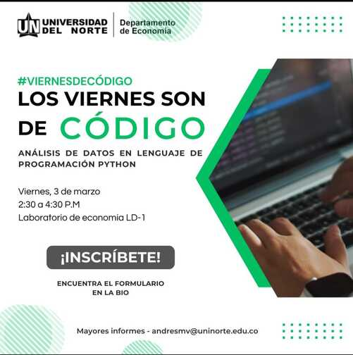
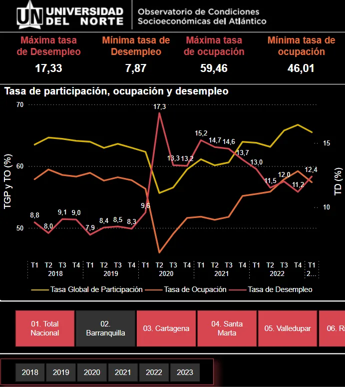

El comienzo
Nací en 2001. Desde niño me caractericé por ser creativo y por vivir analizando el mundo que me rodea.
Bogotá, Colombia · Economía del desarrollo
Soy
Economista con maestría en Economía. Convierto preguntas complejas en estrategias empíricas, proceso datos a gran escala y llevo los resultados a quienes toman decisiones, combinando rigor econométrico, automatización e inteligencia artificial.
He trabajado y estudiado en
Sobre mí
Desde niño me he caracterizado por ser una persona creativa, que vive en su propio mundo analizando todo lo que le rodea. Decidí ser economista porque considero que mi profesión me da herramientas para ofrecer nuevas perspectivas y proponer soluciones fuera de lo común.
Hoy trabajo en el World Bank Group en Bogotá y como consultor de investigación en el Centro Javeriano de Competitividad, donde estudio la productividad, el empleo y el impacto de la inteligencia artificial en Colombia.
Más de 9.200 km recorridos
Experiencia
World Bank Group · Country Management Unit · Bogotá
Centro Javeriano de Competitividad · Pontificia Universidad Javeriana · Bogotá
Universidad del Norte · Departamento de Economía · Barranquilla
Habilidades
Automatización de flujos de datos, web scraping con Selenium, APIs y análisis de texto con NLP sobre datos de X/Twitter.
MATLAB/Dynare · EViews
Selenium · Power Automate · APIs · bots y pipelines de datos
Power BI (DAX, Power Query) · Tableau · Shiny · Plotly
Leaflet · ArcGIS · QGIS
Claude · ChatGPT · APIs de modelos de lenguaje
Español (nativo) · Inglés (fluido)
Investigación
PIB per cápita de Colombia frente a una “Colombia sintética” que no vivió la escalada de la violencia, construida con 11 países (sobre todo Mauricio, Paraguay, Uruguay y Chipre).
Fuente: Díaz y Orozco (2025), Defence and Peace Economics. Serie replicada con el código de la tesis; PIB per cápita en paridad de poder adquisitivo.
Pardo, O. y Orozco, J. (2026). La prima salarial por tamaño de empresa persiste aun controlando por formalidad.
Leer en SSRNOrozco, J., Vargas, A., Perilla, J. y Gómez, C. (2023). Serie Documentos n.º 55, Universidad del Norte.
Leer en ResearchGateCuantifica el costo del conflicto armado en términos del PIB per cápita mediante la metodología de control sintético. Universidad Alberto Hurtado.
Leer documentoDescomposición de la pobreza con el método de Shorrocks-Kolenikov. Universidad del Norte.
Leer documentoCentro Javeriano de Competitividad · 2026
Proyectos
Visualizaciones para públicos no técnicos, con código replicable en GitHub.
Ver código en GitHub
Curso introductorio para principiantes sin experiencia previa, enfocado en desarrollar habilidades fundamentales de análisis de datos y programación.
Ver en GitHubProyecto de divulgación que muestra cómo resolver todo tipo de tareas con herramientas como Python.
Ver en Instagram
Dashboard informativo sobre el mercado laboral en las ciudades colombianas.
Ver publicaciónMe interesa conversar sobre investigación aplicada, análisis de datos y política económica.